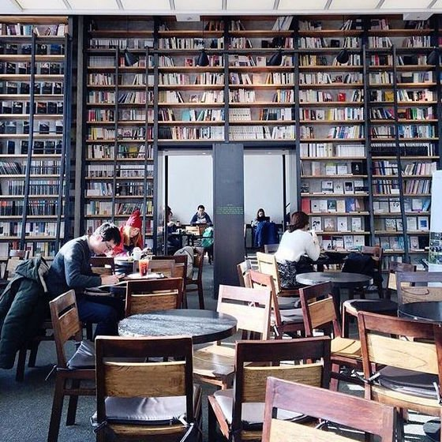

Boeken horen te reizen
Een huiskamer vol rekken, gratis toegankelijk, elke dag open.
Wat je bij ons vindt
Romans
± 900
Het grootste rek, van klassiekers tot pas verschenen werk.
Kinderboeken
± 400
Prentenboeken vooraan, jeugdromans in de achterste kast.
Non-fictie
± 250
Geschiedenis, koken, natuur en een plank vol reisgidsen.
Zo werkt het
Je brengt een boek dat je gelezen hebt en neemt er een mee dat je nog niet kent. Wie niets bij heeft, mag toch iets meenemen; het komt vanzelf goed.
Elke laatste donderdag van de maand komt de leesclub samen. Er is geen inschrijving en geen leeslijst, alleen koffie en wat iedereen die maand toevallig gelezen heeft.